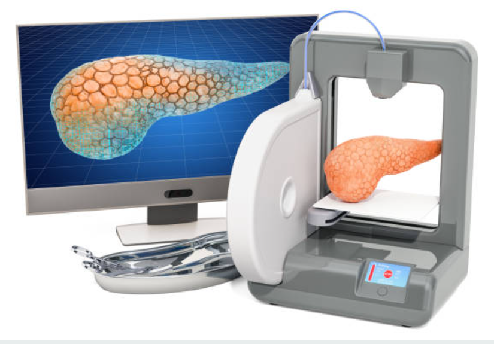

| Técnicas de fabricacion órgano para trasplantes | |
| La fabricación de un páncreas artificial completamente funcional también es un desafío complejo y aún se encuentra en etapas de investigación y desarrollo. Sin embargo, hay algunas técnicas que se están explorando para crear tejido pancreático o páncreas artificiales. | |
|  | 01. Impresión 3D de tejidos: Al igual que en el caso del corazón, la tecnología de impresión 3D se puede utilizar para fabricar estructuras de tejido pancreático. Se imprimen capas de células pancreáticas vivas y biomateriales en un patrón específico para formar tejido tridimensional. Esta técnica tiene como objetivo crear estructuras de páncreas artificiales o generar tejido pancreático para su posterior trasplante. |
02. Terapia génica: La terapia génica implica la introducción de genes específicos en las células pancreáticas para corregir anomalías genéticas o promover su función normal. Se están investigando diferentes enfoques para administrar los genes necesarios, como el uso de virus modificados o la edición genética mediante CRISPR-Cas9. Este enfoque tiene como objetivo mejorar la función del páncreas y potencialmente proporcionar una terapia para la diabetes. |